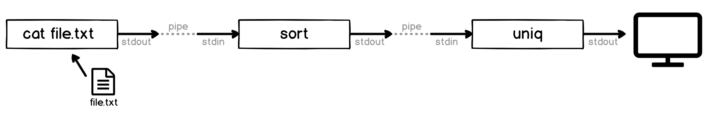

Unix Basics
 https://pambrose.github.io/myslides/unix.html
https://pambrose.github.io/myslides/unix.html
🔦 What is an Operating System?
A set of programs that control on a computer
- Input/Output
- Memory Management
- Disk Access and File Systems
- Network
- Process Control/Scheduling
- Security
- System Logging/Monitoring/Maintenance
- System Backup/Recovery/Upgrade
- User Program Execution
📚 History of Unix
- 1969 at AT&T Bell Labs -- Unix was a trademark of AT&T
- Dennis Ritchie, Ken Thompson, and Brian Kernighan
- Assembly Language -> C Programming Language
- UC Berkeley and GNU
- HP, IBM, DEC, Sun, and others
- Minix, Linux, BSD, and others
- Android, OSX, IOS, and WatchOS

🚨 Why do we care about Unix?
- AWS, Google, Azure, Digital Ocean, and more
- Docker and Kubernetes
- Raspberry Pi
- Enterprise Computing
- DevOps
- Data Science
- It is where many CS people work
🐚 What is a Unix Shell?
- sh
- csh
- bash
- ksh
- fish
- zsh
- tcsh
👉 Summary of shells
✉ Unix Shell Environment Variables
- env
- echo
- $PATH / $HOME / $USER / $SHELL
- $JAVA_HOME / $CLASSPATH
- .zshrc / .cshrc / .bashrc
🦺 General Command Structure
command options args
- man page
- tldr
- single and double dash options
- which/where/whereis
- args[] in programs
📂 File System Commands
- Files, Directories, and Paths ( / .. . ../ ~ *)
- ls
- touch
- cat/more/less/bat
- mv
- rm
- file
- strings
- pwd
- cd
- pushd/popd
- mkdir/rmdir
🖊 Unix Editors
- vi/vim/neovim
- emacs
- pico
- nano
Choose one (preferably vim) and learn it!!
💪 I/O Control
- The Unix Philosophy
- Command Interoperability
- stdin, stdout, and stderr
- Redirecting input/output
- < n> > 2> 2>&1 >>

📥 Common Patterns - Standard Input
📤 Common Patterns - Standard Output
🚿 Pipes
📜 Text Processing
- wc
- grep
- head/tail
- nl
- fold
- sort
- uniq
- rev
- sed
- tr
- cut
🎈 Misc Commands
- ssh
- date/cal
- split
- diff
- compress/uncompress
📦 Job/Process Control
python3 -m http.server 8080
- control-z/jobs/fg/bg/&
- top/htop
- ps
- kill
📜 Scripts
#!/bin/sh
echo "🐶 woof 🐶"
🧑 User Management
- w/who
- su
- root
- sudo
- adduser/rmuser
- chmod
- chgrp
- chown
🎉 Fun Commands
- lynx
- say
- fortune
- cowsay
- pbpaste
- banner/figlet
- sl
- cmatrix
- asciiquarium
💁 Helpful Links
👉 Effective Shell👉 8 Classic Commands and Their Modern Alternatives
👉 A list of new(ish) command line tools
👉 Getting To Know the Linux Filesystem